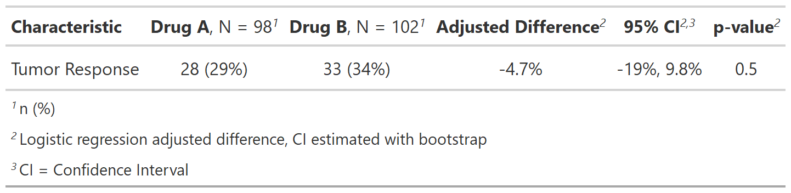

This function works with gtsummary::add_difference() to calculate
adjusted differences and confidence intervals based on results from a
logistic regression model. Adjustment covariates are set to the mean to
estimate the adjusted difference. The function uses bootstrap methods to
estimate the adjusted difference between two groups.
The CI is estimate by either using the SD from the bootstrap difference
estimates and calculating the CI assuming normality or using the centiles
of the bootstrapped differences as the confidence limits
The function can also be used in add_p(), and if you do, be sure to
set boot_n = 1 to avoid long, unused computation.
logistic_reg_adj_diff(
data,
variable,
by,
adj.vars,
conf.level,
type,
ci_type = c("sd", "centile"),
boot_n = 250,
...
)a data frame
string of binary variable in data=
string of the by= variable name
character vector of variable names to adjust model for
Must be strictly greater than 0 and less than 1. Defaults to 0.95, which corresponds to a 95 percent confidence interval.
string indicating the summary type
string dictation bootstrap method for CI estimation.
Must be one of c("sd", "centile").
number of bootstrap iterations to use. In most cases, it is
reasonable to used 250 for the "sd" method and 5000 for the "centile"
method.
not used
tibble with difference estimate
Example 1

Example 2
Other gtsummary-related functions:
add_inline_forest_plot(),
add_sparkline(),
as_ggplot(),
bold_italicize_group_labels(),
style_tbl_compact(),
tbl_likert(),
theme_gtsummary_msk()
library(gtsummary)
tbl <- tbl_summary(trial, by = trt, include = response, missing = "no")
# Example 1 -----------------------------------------------------------------
logistic_reg_adj_diff_ex1 <-
tbl %>%
add_difference(
test = everything() ~ logistic_reg_adj_diff,
adj.vars = "stage"
)
# Example 2 -----------------------------------------------------------------
# Use the centile method, and
# change the number of bootstrap resamples to perform
logistic_reg_adj_diff_ex2 <-
tbl %>%
add_difference(
test = everything() ~
purrr::partial(logistic_reg_adj_diff, ci_type = "centile", boot_n = 100),
adj.vars = "stage"
)